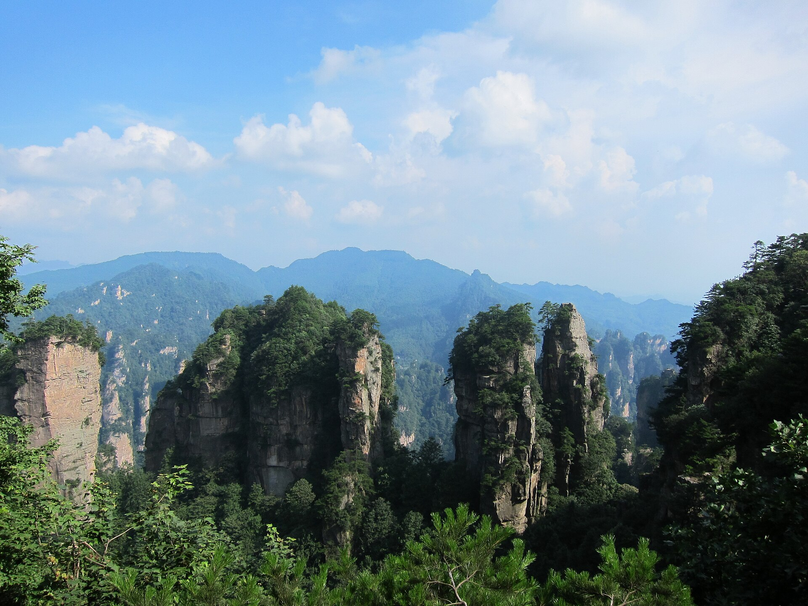
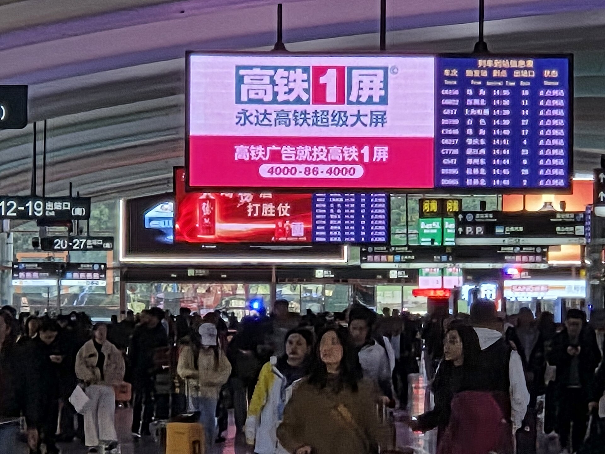
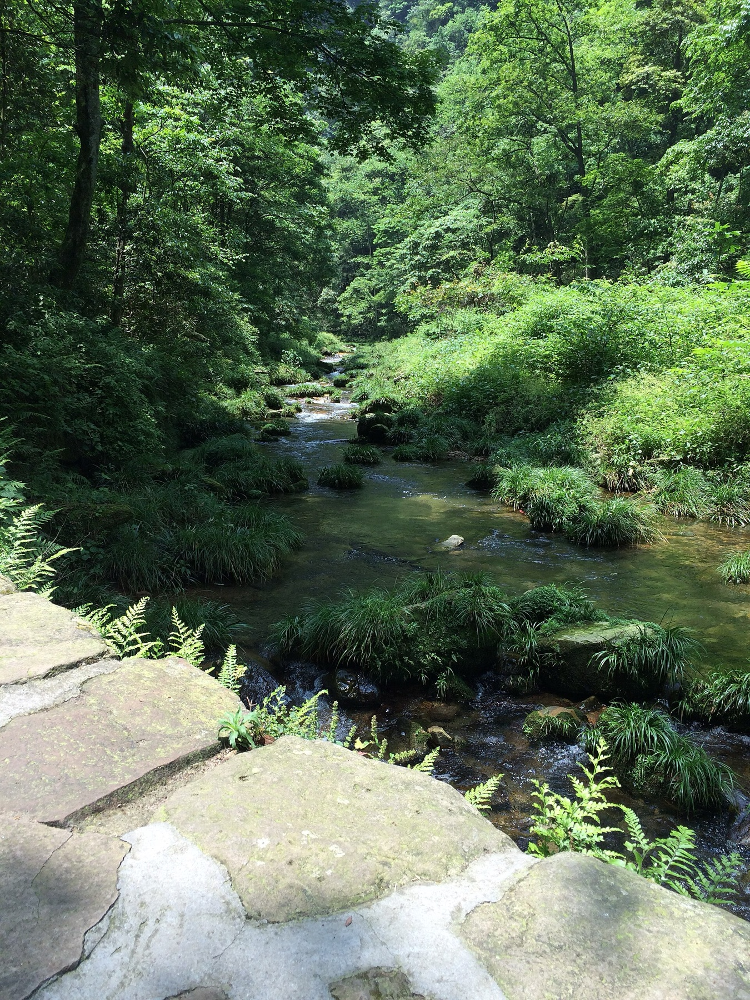
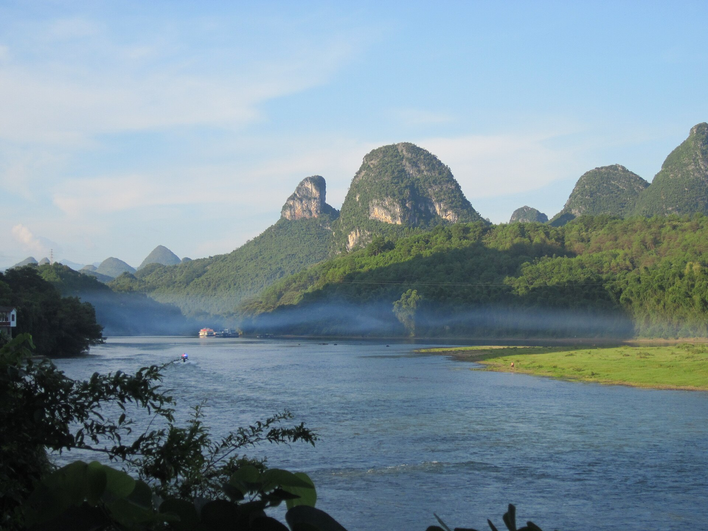

Колёсико или пробел листает. Фото целиком, не обои: нажмите кадр — откроется крупно. Плюсы на тёмных страницах раскрывают загадки.

Улинъюань · кварцевый песчаник · 380 млн лет
Конец октября 2026 · соло · поезда, без перелётов
Семь дней, которых ещё нет
Столбы, где по легенде спрятался стратег, основавший династию Хань. Дыра в горе, которую открыл обвал в 263 году. Река, которую печатают на деньгах. Одна неделя, два длинных поезда.
10 км в горный день. Первый класс. ~10 800 ¥. Ниже — что вы увидите, по шагам, и что об этом рассказывают тысячу лет.
Куда именно
Девять кадров мест
Нажмите любое. Откроется целиком: столбы, дыра в горе, купюра, плот.
Шкала
Всё это делалось очень долго
Море, песок, вода и одна записанная дата обвала. Потом люди: стратег в бегах, крестьянин, назвавший себя Сыном Неба, чиновник со стихом, японец с лестницей. И в конце — ваш поезд.
380 млн лет
Хунань — мелкое море. Песок ложится слоями. В нём уже лежат будущие столбы.
2,6 млн лет
Земля поднимается. Реки режут песчаник по трещинам: плато, стены, столбы. Процесс идёт и сейчас.
214 до н. э.
Канал Линцюй соединяет реки Сян и Ли. Армия Цинь Шихуана идёт на юг по воде. Река Ли становится дорогой.
263
На горе Сунлян раскалывается скала — открывается дыра в 131 метр. Правитель царства У даёт горе имя Тяньмэнь, Небесные врата.
265
Основан Синпин. К вашему приезду ему больше 1 700 лет.
870
На вершине Тяньмэнь строят храм Линцюань. Сегодня это самый высокий буддийский храм Хунани.
1201
Чиновник Ван Чжэнгун на пиру для выпускников пишет: «Пейзажи Гуйлиня — лучшие под небом». Строку найдут на скале в 1983-м.
1385
Сян Дакунь, объявивший себя Сыном Неба, разбит войском Мин и падает в залив Шэньтан. Гора с тех пор — Тяньцзы.
1412
На реке Аньлэ ставят каменный мост Юйлун. Река берёт имя моста: «Встреча с драконом».
1982
Чжанцзяцзе — первый национальный лесопарк Китая.
1992
Улинъюань в списке ЮНЕСКО: больше 3 000 столбов, 40 пещер, два природных моста.
1998
Сталагмит в пещере Хуанлун страхуют на 100 миллионов юаней. Билл Клинтон задерживается на час в рыбацкой деревне у Синпина.
1999
Сквозь дыру Тяньмэнь впервые пролетают самолёты. Синпин утверждают для купюры 20 юаней. Японец Хаяси заканчивает лестницу на Лаочжай.
2002
Открывается лифт Байлун: 326 метров за полторы минуты.
2010
Столб «Опора Южного неба» переименован в «Аллилуйя» из «Аватара». Геологи семи стран утверждают термин «рельеф Чжанцзяцзе».
24 октября 2026
Ваш поезд с Южного вокзала Гуанчжоу. Всё выше — теперь ваше на неделю.
Один маршрут
Горы сначала. Река везёт домой.
Чжанцзяцзе дни 1–4Яншо дни 5–7Гуанчжоу старт и финиш
Линия — ваш круг: вверх в Хунань, потом вниз к реке, потом два часа домой. Из Чжанцзяцзе обратно было бы семь.
Обратная дорога из Яншо короткая, около двух часов. Если начать с реки, неделя кончится семью часами в кресле. Поэтому горы первые. Тридцатого днём уже поезд: тридцать первого ярмарка открывается с утра, и вы не с перрона.
3 ночи у восточных ворот парка, Улинъюань
1 ночь в городе, у канатки Тяньмэнь
2 ночи в Синпине, у пиков с купюры, не на Западной улице
По дороге туда поезд пройдёт мимо Гуйлиня — тех самых пиков, к которым вы вернётесь на пятый день.

Гуанчжоу Южный · 广州南 · первый класс, 2+2
День 1 · 24 октября · природа 0 ч
Шесть часов кресла
Утром проводите сотрудника в Байюне. Потом Южный Гуанчжоу, вечером Западный Чжанцзяцзе. Пять с половиной часов, иногда семь, первый класс. К парку вы подойдёте уже к ночи, и это хорошо: после проводов и такого сидения там всё равно нечего успеть.
день ~1 950 ¥
День 1 · по шагам
Как пройдёт дорога
Байюнь. Проводы
Сотруднику — в терминал, вам — в метро. Дальше вы один; отсюда и начинается неделя.
Южный вокзал, 广州南
Размером с аэропорт. Билет — это паспорт: на турникете сканируют документ. Первый класс — кресла 2+2, берите место у окна.
5,5–7 часов
Первые часы — дельта и заводы. Потом Гуанси: за окном начнут расти «сахарные головы» — это уже карст, вы проедете рядом с Гуйлинем. Потом Хунань, и темнеет.
Чжанцзяцзе Западный, 张家界西
Такси до Улинъюаня около 40 минут. Отель MEI CEN в пяти минутах от ворот парка.
Саньсягуо, 三下锅
Сухой котёл из трёх мясных вещей, острый. Легенда: при Мин солдат туцзя срочно отправили воевать с японскими пиратами, и Новый год встретили на день раньше, свалив в один котёл всё, что было в доме. С тех пор туцзя празднуют «ганьнянь», досрочный Новый год. Просите 微辣, «вэйла» — не очень остро.
Запас, не план: ночной C4108 с Байюнь около 20:16, к утру на месте. Тогда этот день становится ночью в купе.
Тяньцзы · песчаниковые столбы до 400 м · более 3 000
День 2 · 25 октября · 7–8 ч на природе · ~10 км
Вас везут в скалу
Утром лифт Байлун поднимает внутрь горы. Дальше Юаньцзяцзе, «Первый мост под небом», автобус на Тяньцзы мимо запретного залива, вниз канаткой. Между площадками ходите сами: это и есть десять километров. Пешком наверх вместо лифта не идём, там двадцать километров ступеней.
день ~1 290 ¥
Камень и легенда
Земля семьи Чжан
«Аватар» здесь снимали не камерой: голливудский фотограф провёл четыре дня в 2008-м. Всё остальное сделала вода — за два с половиной миллиона лет.
+столбов и пиков
млифт Байлун
мпод Первым мостом
млнлет песчанику
Камень геология
Кварцевый песчаник, 75–95 % кварца. Он твёрже известняка, поэтому не растворяется, а ломается по вертикальным трещинам: сверху плато, потом стены, потом одиночные столбы — и в конце они тоже упадут. Вы смотрите на середину процесса. В 2010 году геологи из семи стран признали это отдельным типом рельефа и назвали его «рельеф Чжанцзяцзе».
Стратег в бегах легенда об имени
Чжан Лян помог Лю Бану основать династию Хань — и увидел, как новый император казнит вчерашних соратников. По местному преданию, он ушёл сюда, на гору Цинъянь, стал отшельником и посадил семь гинкго. Потомки остались. «Чжан цзя цзе» — «земля семьи Чжан». Историки предание не подтверждают. Город получил имя парка только в 1994-м.
Сын Неба 1353–1385
Крестьянин из народа туцзя Сян Дакунь поднимает восстание и зовёт себя Тяньцзы — Сыном Неба, как император. Тридцать лет держит горы. В 1385-м десять тысяч солдат Мин осаждают его сорок дней. Разбитый, он падает в залив Шэньтан. Цин запрещала слово «Тяньцзы» на картах. Туцзя звали гору так всё равно.
Три загадки
01Залив Шэньтан: откуда не возвращаются
Каменная чаша среди скал, обрыв на полкилометра, дно всегда в тумане. Местные говорят: в непогоду снизу слышны гонги, барабаны и ржание лошадей — армия Сян Дакуня. В 1970-х ополченцы с собаками и винтовками пошли вниз; на трети пути собаки отказались идти. До дна, по преданию, не добирался никто. Учёные говорят о ветре в замкнутой котловине. Ваш автобус на Тяньцзы остановится у края: смотровая есть, пути вниз нет.
02Столб, который переименовали ради кино
25 января 2010 года «Опору Южного неба», столб на 1 074 метра над морем, официально назвали «Аллилуйя» — в честь летающих гор Пандоры. Джеймс Кэмерон до этого говорил о Хуаншане. Чжанцзяцзе ответил лозунгом: «Пандора далеко, Чжанцзяцзе рядом». Спор не закрыт. Столб стоит, и вы пройдёте мимо него после лифта.
03Сталагмит за сто миллионов
В пещере Хуанлун стоит «Игла, усмиряющая море»: 19,2 метра, в самом тонком месте десять сантиметров, возраст около двухсот тысяч лет. 18 апреля 1998 года его застраховали на сто миллионов юаней — первый застрахованный природный объект в Китае. Полис стоил двадцать тысяч; о пещере узнала вся страна. Это одна из опций «если тропа кончилась рано» в дне 3.
День 2 · по шагам
Пройдём день
Ворота Улинъюань
Билет действует несколько дней — завтра по нему же. Автобус парка к нижней станции Байлун, около 20 минут.
Лифт Байлун
Первые 155 метров — шахта внутри скалы, темно. Потом стекло, и за 1 минуту 32 секунды вы на 326 метров выше. Три двухэтажные кабины, до 46 человек. Стойте у стекла.
Юаньцзяцзе
Площадка Михуньтай, «где теряют душу». Столб «Аллилуйя». Первый мост под небом: два метра ширины, двадцать длины, 357 метров пустоты под ногами, перила в замках влюблённых. Между площадками — пешком. Это и есть ваши километры.
Обед
Простая столовая у станции автобусов. Макаки открывают молнии и знают, где еда: рюкзак застёгнут, пакеты внутри.
Автобус на Тяньцзы
Горная линия, 17,5 км. Остановка Шэньтанвань — край запретного залива, смотровая. Дальше Тяньцзы: «Императорские кисти», «Фея, рассыпающая цветы», парк маршала Хэ Луна — он родом из этих гор, из уезда Санчжи.
Канатка Тяньцзы вниз
Потом автобус парка к воротам, около 40 минут. Пешком не спускаемся: колени завтра нужны.
У ворот
Массаж ног на улице Улин: вывеска 足疗, «цзуляо». Ужин — копчёное мясо туцзя, 腊肉, «лажоу», и рис.
Слева лифт в скале. Справа те же столбы без тумана. Между площадками ходите сами — это и есть 10 км.
День 2 · ещё кадры
Парк столбов
Люди гор
Бицзика — «местные»
Больше двух третей жителей Чжанцзяцзе — туцзя. Сами себя они зовут бицзика, «местные». Письменности у народа нет; всё, что важно, живёт в танце, ткани и песне. Вот на что смотреть.
Байшоу танец руками
Пятьсот лет, семьдесят жестов: пахота, охота, война, сватовство. Танцуют кругом, всей деревней, под барабан. Раз в год — большое «жертвоприношение рук», главный праздник туцзя.
Где: шоу «Прелестный Сянси» в Улинъюане, вечер дня 2 или 3, 80 минут.
Маогусы люди в соломе
Танцоры с головы до ног в рисовой соломе, без слов, одни выкрики: так туцзя показывают предков, добывавших огонь и зверя. Этнографы называют это «живым ископаемым» китайского театра.
Где: там же, и в парке туцзя в городе Чжанцзяцзе, вечер дня 4.
Силанькапу парча
Ткань, которую туцзя когда-то возили в дань императорскому двору: геометрия, цветы и звери на тёмном фоне. В сувенирных лавках — машинная. Ручная стоит от тысячи юаней, и стоит этих денег.
Где: лавки на улице Улин; спрашивайте 手工, «шоугун», ручная.
Куцзя плач невесты
Невеста плачет песней от помолвки до порога дома мужа; чем ближе отъезд, тем горше. Учатся с детства, у матерей и тёток. Сегодня — в дальних деревнях и на сцене.
Где: свадебная сцена в шоу и в парке туцзя. Это постановка, но песни настоящие.
Дяоцзяолоу дома на сваях
Деревянные дома на столбах над склоном: внизу скот и инструмент, наверху люди, резные перила на веранде. Так строили, чтобы не отнимать землю у поля.
Где: из окна автобуса парка и такси; в парке туцзя стоит девятиэтажный.
Ганьнянь досрочный Новый год
Туцзя встречают Новый год на день раньше остального Китая. По преданию, при Мин солдат срочно отправили воевать с пиратами, и семьи сели за стол накануне. Из того спешного ужина вышло саньсягуо — котёл, который вы ели в первый вечер.
Где: в тарелке. Ищите вывеску 三下锅.

Цзиньбянь · 金鞭溪 · 7,5 км по дну каньона
День 3 · 26 октября · 6–7 ч · ~10 км
Семь километров вдоль воды
Тропа «Золотой кнут»: утром такси к западным воротам, потом семь с половиной километров вниз по течению до места, где сходятся четыре ручья. Оттуда экоавтобус к вашим воротам. Второй район сегодня не добавляем: иначе будет пятнадцать–восемнадцать километров, а вам хватает десяти.
день ~930 ¥ · без озера и игл
Легенда
Кнут императора
У ручья имя от скалы, а у скалы — от Цинь Шихуана, того самого, что построил Стену и терракотовую армию. Скала меняет цвет четыре раза в день.
Кнут легенда
У первого императора был волшебный кнут: он гнал им горы в море, чтобы расширить царство. Дракон-царь Восточного моря испугался за своё дно и подослал дочь; та подменила кнут подделкой. Заметив обман, император в ярости швырнул фальшивку — она упала здесь и обратилась в камень. Скала Цзиньбянь: 380 метров, четыре грани, «сегменты» кнута — горизонтальные трещины.
Как читать скалу по часам
Уездная хроника 1700-х: «пронзает небо, сияет как снег». На рассвете она бурая, в полдень золотая, на закате красная, в лунную ночь серебряная. Вы пройдёте под ней утром, когда она ещё тёмная. Обернитесь через час: солнце сдвинется, и вы поймёте, откуда имя.
Могила стратега конец тропы
Шуйжаосымэнь — «воды, обходящие четыре ворот»: здесь сходятся четыре ручья, и здесь показывают могилу Чжан Ляна, того, кто дал имя всему месту. Историки не подтверждают. Табличка стоит. Это конец вашей тропы и остановка вашего автобуса.
Две загадки попроще
01Кто хозяин тропы
Макаки. Они знают, что в пакете еда, умеют открывать молнии и не боятся людей. Не кормить, не смотреть в глаза, пакеты в рюкзак. Это единственный конфликт, который ждёт вас у ручья, и он решается застёжкой.
02Почему вода прозрачная, а камень красный
Песчаник здесь скреплён окислами железа — отсюда ржавые и красные полосы на стенах. Кварц воду не красит и не растворяется, поэтому ручей чистый до дна. Известняк Гуйлиня, куда вы едете на пятый день, ведёт себя ровно наоборот: растворяется, и река там мутнее после дождя.
День 3 · по шагам
Вниз по течению
Такси к западным воротам
Ворота лесопарка, 森林公园门票站, 35–40 минут вокруг гор. Вход по вчерашнему билету.
Начало тропы
300 метров от ворот. Ручей слева, столбы над головой, дорожка мощёная, почти без набора высоты. Местная шутка: «кислородный бар». Дыхание после вчера восстановится само.
Скала Цзиньбянь
380 метров, «Золотой кнут». Рядом «Орёл, охраняющий кнут» — ещё одна скала, если смотреть с нужной точки. Утром обе тёмные.
Цзыцао тань, «Пурпурная заводь»
Место, где люди сидят у воды. В октябре воды мало и она тихая. Перекус здесь, из своего.
«Тысяча ли ради встречи», 千里相会
Два столба, наклонённые друг к другу. Сюда сверху спускается тропа с Юаньцзяцзе: вчера вы стояли над этим местом.
Шуйжаосымэнь
Четыре ручья, могила Чжан Ляна, станция экоавтобусов. До ворот Улинъюань 15–20 минут.
У ворот
Обед и решение: озеро, пещера или иглы. Одно из трёх, не все. Или ничего — это тоже вариант.
Если тропа кончилась рано
Одна вещь. Не три.
Озеро Баофэн
Водохранилище 1970-х между скалами. Лодка 1,5–2 часа, до 17:00; с берега из беседки поют девушки туцзя — это часть билета. Такси 10–15 мин. +96–120 ¥ сверху сметы.
Пещера Хуанлун
Полдня, лодка по подземной реке, сталагмит за сто миллионов. Не вместо столбов. Не вместе с Янцзяцзе.
Иглы или ноги
К 15:00 больница Улинъюань, иглы. Вечером массаж ног на улице Улин: вывеска 足疗, «цзуляо». Не оба впритык к горам.
Тяньмэнь · дыра 131,5 × 57 м · 1 300 м над морем
День 4 · 27 октября · 7–8 ч · 10–12 км
Дыра в горе
Небесные врата, Тяньмэнь: сквозное отверстие 131 метр в отвесной скале. Снизу 999 ступеней, эскалатор есть. Потом тропа Гуйгу — доски в обрыве на высоте 1 400 метров — и стекло вдоль скалы. Картинка, где человек в поясе ползёт боком, это Хуашань, другая провинция.
день ~1 240 ¥
История и загадки
Единственная арка с датой рождения
Все большие природные арки мира стары и безымянны по возрасту. У этой есть год: 263-й. Хроники записали грохот, а правитель — новое имя горы.
год обвала
мвысота дыры
мканатка из города
поворота дороги
ступеней к дыре
Обвал 263 год
Шестой год эры Юнъань царства У. Пока префект Улина воюет с горцами, на горе Сунлян раскалывается скала — и сквозь гору видно небо. Правитель Сунь Сю объявляет это доброй приметой и переименовывает гору: Тяньмэнь, Небесные врата. У подножия учреждают округ Тяньмэнь, сегодняшний Чжанцзяцзе. Геологи: карстовая пещера, у которой обрушились северная и южная стенки. Дата — в хрониках.
Девятки число неба
Дорога наверх — 99 поворотов, лестница к дыре — 999 ступеней. Девять — высшее число ян, у неба девять слоёв, а «цзю» звучит как «долго». Дорога Тунтяньдадао, «путь к небу»: 10,77 километра и 1 100 метров подъёма. Канатка из центра города — 7 455 метров, 28 минут, набор 1 279 метров, самый крутой участок 37 градусов.
Храм 870 год
На вершине с 870 года стоит храм Линцюань — теперь Тяньмэньшань сы, самый высокий буддийский храм Хунани. Паломники ходили сюда с эпохи Мин; здание отстроили заново в 2002-м. Дым благовоний на алтаре под дырой — не декорация: люди просят у Врат.
Шесть загадок Тяньмэнь
01Тяньмэнь фаньшуй — вода из скалы в засуху
Из отвесной стены слева от дыры в самую сухую погоду вдруг бьёт поток: рёв, дрожь, водопад на сотню метров. Через недели уходит. Местные записывали годы — 1949, 1965, 1976, 1989, 1998 — и говорят, что каждый раз следом случалось большое. Геологи: на вершине карстовая воронка, копит воду и переливается. Почему в засуху — объяснения нет.
02Тяньмэнь чжуансян — дыра «поворачивается»
Семьдесят лет назад дыру видели с южной пристани в центре города. Сегодня оттуда видна только гора; чтобы увидеть дыру, ехать четыре километра, в парк у моста Даюн. Дыра сдвинулась с севера на северо-запад? Официальное объяснение — новые дома и угол зрения. Старики не согласны.
03Гуйгу сяньин — лик в пещере Гуйгу
На отвесной стене под вашей тропой, куда только по верёвке с вершины, — пещера Гуйгу. Внутри «каменный стол», «каменная кровать», знаки древнего письма. По преданию, здесь в эпоху Воюющих царств уединился Гуйгуцзы — учитель стратегов, чьи ученики стравливали и мирили царства — и читал «Книгу перемен». В 1980–90-х отставной военный спускался туда шесть раз, и на одном снимке стены проступил профиль старика. Пересъёмки ничего не дали. Тропа Гуйгу висит прямо над этой пещерой; отсюда её имя.
04Ефу цанбао — клад монаха
1644-й: Ли Цзычэн берёт Пекин, теряет его и бежит с казной. Его генерал Ли Го, по хронике уезда, принял монашество под именем Ефу и «прилетел» в этот храм. Казна, говорят, ушла в гору. Ищут почти четыреста лет. Не нашли.
05Тяньмэнь дункай — почему открылось именно так
Ровная арка на высоте 1 300 метров, сквозь которую можно пролететь на истребителе. Обвал записан, но почему пещера рухнула именно так — ответа нет. Люди проверяли дыру на прочность:
199911 декабря спортивные самолёты впервые пролетают сквозь дыру; трансляцию смотрят 800 миллионов человек.
200617 марта — Су-27 «Русских витязей» проходят через Врата строем.
2007Ален Робер поднимается по скале под дырой без верёвки. Табличка на месте.
2011Джеб Корлисс пролетает сквозь дыру в вингсьюте, больше 200 км/ч.
с 2012Здесь проходит чемпионат мира по вингсьюту; старт с пика Юйху, 1 458 м.
2016Открывается стеклянная тропа Паньлунъя, 100 метров, по которой вы пройдёте.
06Тяньмэнь жуйшоу — зверь
Самая туманная из шести: «благой зверь Тяньмэнь», которого видят на склонах и не могут поймать в кадр. Ни описаний, ни фотографий. Местные включают его в список для полноты — включаем и мы.
День 4 · по шагам
Снизу вверх, потом вниз по серпантину
Улинъюань → город
Такси около 40 минут. Рюкзак — на ресепшн Hampton by Hilton, 150 метров от нижней станции канатки.
Нижняя станция в городе
С ноября 2025 верхний участок канатки перестраивают, поэтому на гору сейчас едут через дыру. Маршрут B: шаттл 15 минут к воротам горы, оттуда скорая канатка к площади под дырой. Очереди на нём короче.
Площадь под дырой
Сначала просто стойте. 131,5 метра пустоты над вами, сквозь неё небо и облака. Люди на ступенях — точки.
999 ступеней вверх
Круто, 20–40 минут. Эскалатор в обход стоит 32 ¥ вверх и бесплатен вниз. Наверх ногами — вы за этим ехали. В дыре ветер, за спиной весь город.
Эскалатор сквозь гору
Семь секций внутри скалы, входит в билет. Выход на вершине.
Западная линия: Гуйгу
1,6 километра на высоте 1 400 метров: бетон и доски вдоль стены, перила. Стекло 60 метров — выдают бахилы; Паньлунъя, 100 метров стекла. Внизу под вами — пещера Гуйгу из загадки 03.
Обед и храм
Простая еда на вершине. Храм Тяньмэнь — южная линия, полтора километра туда-обратно, самый высокий храм Хунани.
Вниз по 99 поворотам
Эскалатор к дыре, ступени вниз или бесплатный эскалатор. Автобус по серпантину, 25–30 минут: теперь вся дорога под вами. Средняя станция — канатка в город.
Отель
Массаж ног Мяоцзя в комплексе Hampton. Вечер, если ноги: парк туцзя в городе, 10 минут на такси — байшоу, маогусы и девятиэтажный дом на сваях.
Ветер закрывает стекло, лёд закрывает дорогу. Тогда всё едет через скорую канатку, а Гуйгу остаётся деревянной. Утром проверьте статус на Trip.com или у ресепшн.
Слева та же дыра с серпантина. Справа доски Гуйгу в обрыве. Пояс не выдают: держат перила.
День 4 · ещё кадры
Тяньмэнь с разных сторон
Яншо · известняковый карст · ~300 млн лет
День 5 · 28 октября · 1,5–2 ч вечером
Снова кресло, потом река
Утром Чжанцзяцзе, днём Гуйлинь: около семи часов, снова первый класс. Оттуда короткий поезд до станции Яншо — она стоит не в Яншо, а в самом Синпине. Ночуете не на Западной улице, а в посёлке у купюры. Если свет ещё есть — закат с холма Лаочжай, по лестнице, которую построил один японец.
день ~2 390 ¥
Люди реки
Лестница японца
В 1996 году 66-летний японец приехал в Синпин на конференцию, спросил, откуда лучший вид, — и ему показали гору, на которую не было тропы.
Хаяси Кацуюки Линь Кэчжи, 林克之
Поднялся на Лаочжай с верёвками и решил остаться. Купил книги по строительству, получил разрешение, нанял местных, сам таскал наверх кирпичи и порох — и за полгода на свои деньги вырубил 1 149 ступеней и павильон на вершине. Потом второй, на полпути, чтобы люди отдыхали. Потом гостиницу у подножия. Потом маленькую ГЭС для деревни, десять лет мотаясь за деньгами в Японию.
Два павильона «Дружба» и «Мир»
Верхний называется Павильон дружбы, нижний — Павильон мира. С верхнего видна вся излучина и купюра целиком, с нижнего можно отдышаться. Годами Хаяси сам подметал ступени, раз в день. В 2002-м на нём женилась девушка из Синпина, увидевшая его по телевизору. Местные зовут его Линь Кэчжи.
Закат, который писали Сюй Бэйхун
Закат с этой горы писал Сюй Бэйхун, главный китайский живописец лошадей: в 1930-х он жил в Яншо. В конце октября солнце садится около 18:05. Подъём 40–50 минут, спуск в сумерках — фонарь в телефоне заряжен. По его ступеням вы и подниметесь.
День 5 · по шагам
Из песчаника в известняк
Чжанцзяцзе Западный
Первый класс до Гуйлиня, около семи часов. Книга, окно, сон. Самый дорогой день недели, и он весь в кресле.
Гуйлинь, пересадка
Короткий поезд до станции Яншо, 20–40 минут, второй класс.
Станция Яншо стоит в Синпине
До старого посёлка 9 километров: такси 20–30 ¥ или автобус за 5. До самого Яншо было бы 35 километров — туда вам и не надо.
Mochi, Синпин
Окно на пики. Рюкзак на пол, кроссовки не снимать.
Лаочжай
1 149 ступеней, 300 метров вверх, 40–50 минут. Закат около 18:05: вся излучина и купюра целиком. Спуск в сумерках, фонарь.
Ужин на набережной
Пивная рыба, 啤酒鱼, «пицзю юй»: карп в местном пиве Лицюань, фирменное блюдо Яншо. Рано спать: завтра река с утра.
Если поезд опоздает и на Лаочжай не успеть — не беда: холм никуда не уйдёт, утро дня 7 свободно.
Синпин · отмель Хуанбу · купюра 20 юаней, 1999
День 6 · 29 октября · 6–8 ч · 5–8 км
Купюра, потом поля
Утром смотровая с двадцати юаней, та самая картинка, и плот к скале с девятью конями. Днём река Юйлун: вас несут водой мимо моста 1412 года. Западную улицу Яншо оставляем туристам; вечером, если захотите, шоу Чжан Имоу на воде.
день ~2 270 ¥
История и легенда
Река, которую носят в кошельке
«Гуйлинь шаньшуй цзя тянься» — «пейзажи Гуйлиня лучшие под небом». Строке 825 лет, её знает каждый школьник. Написана в 1201-м, найдена в 1983-м под слоем известкового натёка на скале.
¥купюра с Синпином
ступеней на Лаочжай
коней в скале
год моста Юйлун
Купюра отмель Хуанбу
Пятая серия юаня, образца 1999 года, в обращении с 2000-го. На обороте двадцатки — отмель Хуанбу, «Жёлтое полотно», чуть ниже Синпина: на дне лежит светлая каменная плита, и в безветрие пики отражаются в воде как в зеркале. Семь пиков вокруг — «семь фей», которые предпочли окаменеть, но не вернуться на небо. Смотровая наверху — 20 ¥ и пятнадцать минут ступеней. Ракурс с купюры снимают с воды: через пять минут после отхода плота от пирса, вверх по течению.
Девять коней Хуашань, гора-картина
В четырёх километрах вверх — стена в сто метров с пятнами охры, зелени и белого. В них спрятаны девять коней. Народная песенка: «Увидишь семь — станешь вторым на экзаменах, увидишь девять — первым». 15 мая 1960 года здесь плыли Чжоу Эньлай и маршал Чэнь И. Чэнь И насчитал семь. Чжоу — «намного больше твоего»: восемнадцать, вместе с отражением. Сюй Бэйхун, главный живописец коней, говорят, увидел восемь. Ваш плот пройдёт мимо — считайте.
Дракон, который остался река Юйлун
Речка раньше звалась Аньлэ, «Мир и радость». Дракон из Восточного моря заплыл сюда, посмотрел — и решил, что его море хуже. Спрятался, выходил любоваться ночами, потом и днём; крестьяне видели. Так река стала Юйлун, «Встреча с драконом». Каменный мост Юйлун стоит с 1412 года, перила с резьбой добавили в 1870-м. От него ваш плот и пойдёт вниз.
Лю Саньцзе певица народа чжуан
Третья дочь семьи Лю, которую не мог перепеть никто: землевладелец сватался, слал учёных на состязание — она отвечала песней и побеждала. По одной версии родилась в 703 году, по другой — улетела на карпе в небо. Фильм 1961 года о ней снимали здесь, его знает весь Китай. С 2004-го — «Впечатление: Лю Саньцзе» Чжан Имоу: шестьсот рыбаков и крестьян, сцена — два километра реки и двенадцать пиков в свете прожекторов.
Дорога Цинь 214 год до н. э.
Инженер Ши Лу по приказу Цинь Шихуана прорыл канал Линцюй и соединил Сян, бассейн Янцзы, с Ли, бассейном Жемчужной. Первый в мире канал через водораздел. Армия пошла на юг по воде и в тот же год взяла Линнань — нынешние Гуандун и Гуанси. Всё, что вы увидите с плота, две тысячи лет было трассой: соль и рис вверх, войска вниз.
Строка на скале 1201 год
Ван Чжэнгун, 68-летний чиновник из Нинбо, управлял Гуйлинем и на пиру в честь одиннадцати выпускников экзаменов написал два стихотворения. Ученик высек их на пике Дусю. Натёк закрыл камень на восемь веков; в 1983-м реставраторы счистили его и прочли первую строку. Гуйлинь до сих пор считает её лучшей рекламой в своей истории и переводит на сорок языков.
Три вопроса перед рекой
01Бакланы: ремесло или спектакль
Рыбак на бамбуковом плоту с фонарём и двумя чёрными птицами — тысячелетний способ: птице повязывают шнурок на шею, крупную рыбу она проглотить не может и отдаёт. Сегодня в Синпине это фотосессия за 20–50 ¥, а не заработок. Птицы настоящие, шнурок настоящий, рыба — не всегда. Смотреть — на закате у пирса; лучше знать заранее, чем разочароваться на месте.
02Синпин или Яншо
Западная улица Яншо — 1 400 лет, с эпохи Суй, и последние сорок — главная тусовка бэкпекеров Китая. Вы ночуете в Синпине, в 30 километрах, у пиков с купюры: бары там, тишина здесь. Если хотите шоу Чжан Имоу — такси 40 минут, начало около 20:00, 70 минут, билеты 200–300 ¥, обратно к 22:30. Это сверху сметы и только если ноги согласны.
03Почему в октябре
Уровень Ли зависит от дождей. Летом река мутнеет и разливается, отражения пропадают. В октябре воды мало, она чистая, и пики ложатся в неё как на купюре. Ещё в октябре цветёт османтус — дерево, давшее имя Гуйлиню, «лесу османтуса»; запах стоит по всему посёлку. Вы едете в правильный месяц.
День 6 · по шагам
Сначала Ли, потом Юйлун
Необязательно: Сянгуншань
20 минут на машине, 60 ¥ вход: рассвет над излучинами, точка всех календарей. Только если проснулись сами.
Смотровая 20 юаней
15–20 минут вверх по ступеням, 20 ¥. Купюра в руке, солнце в спину. Отмель Хуанбу перед вами.
Плот от пирса Синпин
30–60 минут вверх по течению: Хуанбу, потом «Девять коней». Здесь мотор, не шест — на Лицзян течение. Считайте коней; семь — уже хорошо.
Обед в старом посёлке
Гуйлинь мифэнь, рисовая лапша за 10 ¥, или снова пивная рыба. Пиво Лицюань местное.
Такси к Юйлун
Около 40 минут, к мосту Юйлун 1412 года. Плот на двоих — целиком ваш: плотовщик шестом, полтора часа вниз. Плотины-ступеньки: плот съезжает, брызги — ноги поднять, телефон в карман. Бамбук здесь часто пластиковый; вода настоящая.
Назад в Синпин
Рядом с Юйлун дают велосипеды: если силы есть, час по дорожке между полями, потом такси.
Закат
Пирс, бакланы и фонари на плотах — или снова Лаочжай, если ноги.
Необязательно: шоу на воде
«Впечатление: Лю Саньцзе» в Яншо, 70 минут. Такси 40 минут туда и обратно, к 22:30 в отеле.

Слева Юйлун: вас несут водой. Справа Лицзян утром, туман над водой. Не автобус по вершине.
День 6 · ещё кадры
Река, купюра, плот
Люди реки
Кто здесь поёт
Гуанси — автономный район народа чжуан, самого большого после хань: почти двадцать миллионов. Главное у них — песня. Вот что вы услышите и увидите между двумя плотами.
Шаньгэ горные песни
Деревни поют друг другу вопросами и ответами; проиграл тот, кто не нашёл строчку. Большой день — Саньюэсань, третий день третьего лунного месяца. Лю Саньцзе — их святая, и её статуя стоит на празднике.
Где: в октябре праздника нет. Услышите от лодочника, если попросите, и на шоу Чжан Имоу.
Рыбацкая деревня Юйцунь, 1506
Два километра берегом от Синпина: 48 домов эпох Мин и Цин, серый кирпич, чёрная черепица, стены «конская голова», резные окна. В 1921-м сюда заходил Сунь Ятсен, в 1998-м — Билл Клинтон, и задержался на час.
Где: утро дня 7, полтора–два часа туда и обратно.
Старая улица Синпин
Посёлок основан в 265 году, улица мощена камнем, дома Мин и Цин, храм Гуаньди времён Цяньлуна. Сверните с главной в переулки: там мастерские, где до сих пор вяжут бамбуковые снасти.
Где: вечером дня 6 или утром дня 7, без билета.
Кухня Гуйлинь и Яншо
Гуйлинь мифэнь — рисовая лапша на завтрак, 10 ¥, с маринованными овощами. Пивная рыба — карп в пиве Лицюань, фирменное блюдо Яншо. Османтус — сладкое вино и сахар из цветов, которые как раз опадают в октябре.
Где: набережная Синпина; мифэнь — где очередь из местных с утра.
Бакланы лучи, 鸬鹚
Тысячелетний способ ловли, сегодня — фотосессия на закате. Шнурок на шее не даёт птице проглотить крупную рыбу. Рыбаки в соломенных шляпах на плотах у пирса — настоящие рыбаки на пенсии, и это их заработок.
Где: пирс Синпина на закате, 20–50 ¥ за кадры.
Вода как календарь почему сейчас
В октябре Ли низкая и прозрачная, отражения лучшие в году; летом она мутная и высокая. Утренний туман над водой держится до девяти. Чем раньше вы на воде, тем ближе к купюре.
Где: с первым плотом, 09:00–09:30.
Лицзян · утро · вокзал Яншо в 9 км, в Синпине
День 7 · 30 октября · поезд после обеда
Ещё утро у реки, и домой
Утром Синпин не спеша: старая улица и рыбацкая деревня, куда заходили Сунь Ятсен и Клинтон, или повтор холма на рассвете. После обеда поезд около двух часов, Южный Гуанчжоу. На Пачжоу сегодня не идти: между фазами зал закрыт. Тридцать первого третья фаза откроется с утра, и вы будете выспаны.
день ~720 ¥ · без ночёвки · ярмарка завтра
День 7 · по шагам
Медленное утро, быстрый поезд
Необязательно: рассвет на Лаочжай
Если закат дня 5 не случился. Наверх 45 минут, туман в излучине держится до девяти.
Старая улица
Мифэнь на завтрак, потом камень Мин и Цин, храм Гуаньди, переулки с бамбуковыми снастями.
Рыбацкая деревня
Два километра берегом, 48 домов 1506 года. Туда и обратно полтора–два часа. Чемодан ждёт на ресепшн.
На станцию
Вокзал Яншо — 9 километров, такси 15 минут. Второй класс, около двух часов до Гуанчжоу Южного.
Гуанчжоу
Дельта за окном возвращается. Отель, душ, рано спать. Завтра третья фаза с 09:30 — залы 9.2, 10.2 и 21.2, и ничего больше.
Где спать
Три адреса
Ночи 1–3 · у ворот
MEI CEN
9.7 · 5 минут до ворот Улинъюань. В смете 650 ¥/ночь.
Номер целиком. Плот на Юйлун целиком. Без шопинга, массажа, шоу и озера — они сверху, если возьмёте.
Жильё5 100 ¥
Поезда1 750 ¥
Еда1 540 ¥
Парки и плоты1 200 ¥
Такси1 200 ¥
По дням. Нажмите строку — откроется разбивка.
День
Поезд
Ночь
Еда
Парк / плот
Такси
Итого
1 · дорога
900
650
220
—
180
1 950
2 · столбы
—
650
220
380
40
1 290
3 · ручей
—
650
220
—
60
930
4 · Тяньмэнь
—
550
220
288
180
1 238
5 · в Синпин
590
1 300
220
—
280
2 390
6 · река
—
1 300
220
532
220
2 272
7 · домой
260
—
220
—
240
720
Неделя
1 750
5 100
1 540
1 200
1 200
~10 790
Цифры округлены, чтобы сойтись со сметой недели. Билеты на поезд скачут. Озеро, шоу, массаж, иглы, смотровая за 20 ¥ и рассвет за 60 — не внутри этих сумм.
Это не забыли
Не влезло в семь дней
Неделя уже занята: два поезда, три горных дня под потолок 10–12 км, один речной. Тридцатого днём уже поезд. Ниже — что можно добавить только если выкинуть что-то из плана или появится восьмой день.
Тропа со страховкой, как на Хуашане
Та фотография, где человек в поясе пристёгнут к тросу и боком идёт по узкой доске без перил, снята на Хуашане, провинция Шэньси, рядом с Сианем. От Гуанчжоу это другой конец страны, только самолётом или ночью в поезде. В Чжанцзяцзе этого аттракциона нет. Ближний «парк со страховкой», Шинючжай, стоит у Чанша: данься, стеклянный мост, 50 метров досок в поясе. Пейзаж не «Аватар», ехать полдня. Ваша тропа здесь — Гуйгу на Тяньмэнь, 27-го.
Стеклянный мост через каньон
Полдня плюс 40 минут от парка. Дни 2–4 уже под потолок ходьбы. Вшить его — значит выкинуть ручей или Тяньмэнь, либо приехать разбитым. Если будет 8-й день — его. Стекло на Тяньмэнь другое: там настил вдоль скалы, не мост над пропастью.
Начать с Яншо, горы потом
Можно. Тогда финиш — семь часов в кресле из Чжанцзяцзе. Мы развернули маршрут, чтобы последний поезд был два часа. Это выбор порядка, не нехватка времени.
Террасы Лунцзи
Нужен целый день: 2–3 часа в каждую сторону из Синпина плюс ступени. Чтобы вставить, придётся выкинуть Тяньмэнь или реку. На семь дней с двумя поездами не успеваем.
Данься и Либо
Другие ландшафты и ещё поезда. Это уже другая поездка, не «добавка к субботе». Не успеваем и не пытались втиснуть.
Янцзяцзе в день ручья
Успеть можно только ногами. Будет 15–18 км. Потолок 15. Узкая тропа по ребру и так будет на Тяньмэнь на следующий день.
Шоу «Прелестный Сянси» и «Лю Саньцзе»
Оба успеваем: «Сянси» — вечер дня 2 или 3 в Улинъюане, 80 минут, +158–198 ¥, там байшоу, маогусы и плач невесты со сцены. «Лю Саньцзе» — вечер дня 6 в Яншо, 70 минут на воде, +200–300 ¥ и такси. Не включил в обязательное, потому что это зал и трибуна, не горы. Если захотите вечер не на улице — берите одно.
После километров
Ноги вечером. Иглы — днём.
Массаж ног
Зашли на час. На вывеске 足疗, «цзуляо», foot massage. 80–180 юаней. Не в смете недели.
У парка: улица Улин, массаж слепых напротив «Тяньцзы»
У канатки: салон Мяоцзя в комплексе Hampton
Синпин: попросите ресепшн Mochi
Иглоукалывание
С улицы, без записи. Паспорт, окошко 挂号 «гуахао» (регистратура), слово 针灸 «чжэньцзю» (acupuncture). Час–полтора. После 17:00 отделение закрыто. Не в смете недели, около 60–180 юаней.
В горах удобнее всего день 3, к 15:00, больница Улинъюань
Утро 30-го ещё Синпин, если захотите. Иглы лучше день 3, 26-го
Яншо · 30 октября · два часа до Гуанчжоу
Октябрь ещё впереди
Теперь вы прошли это один раз
Фото — Wikimedia Commons. Легенды — местные, как их рассказывают в Хунани и Гуанси; даты и цифры сверены с хрониками и парками. План текстом лежит в той же папке. Стрелка вверх вернёт к столбам.